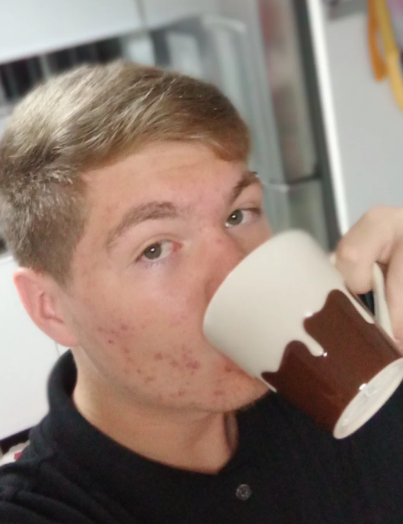
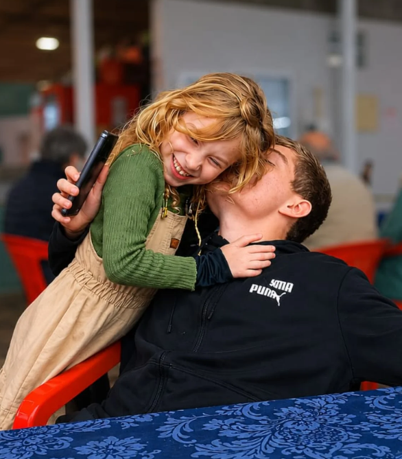

Voltar ao Menu
Fernando Nascimento


Dale guys, eu sou o Fernando, mas pode me chamar de:
- Fernando Maça
- Fernando Loiro
- Fernando Não Neto
- Fernando Avô
- Fernando Ruivo
- Nascimento
- Mc Coxinha
- etc...
Algumas curiosidades sobre mim:
-
Eu gosto de jogar diversos jogos, meu jogo favorito é RDR2
- Gosto de UX e front end
- Moro em Santo André
- Gosto muito de andar de trem e visitar diferentes estações
- Minha estação favorita é a Luz
- Eu gosto de Legião Urbana
- Minha série favotita é The Office até a temporada 7 ep 22
- Moro com minha mãe, meu pai e minha irmã
- Eu falo e rio sozinho
- Tenho uma cachorra chamada nevasca
- Gosto de conhecer pessoas novas
- Minha comida favorita é Macarrão
- Gosto de cozinhar
- Minha bebida favorita é leite gelado
- Minha forma de energia favorita é a nuclear
- Minha cor favorita é azul
Minha Irmã

Musicas que gosto
Spotify
Matérias Tech favoritas


Lugares que conheço e gosto bastante
Lugares que desejo conhecer